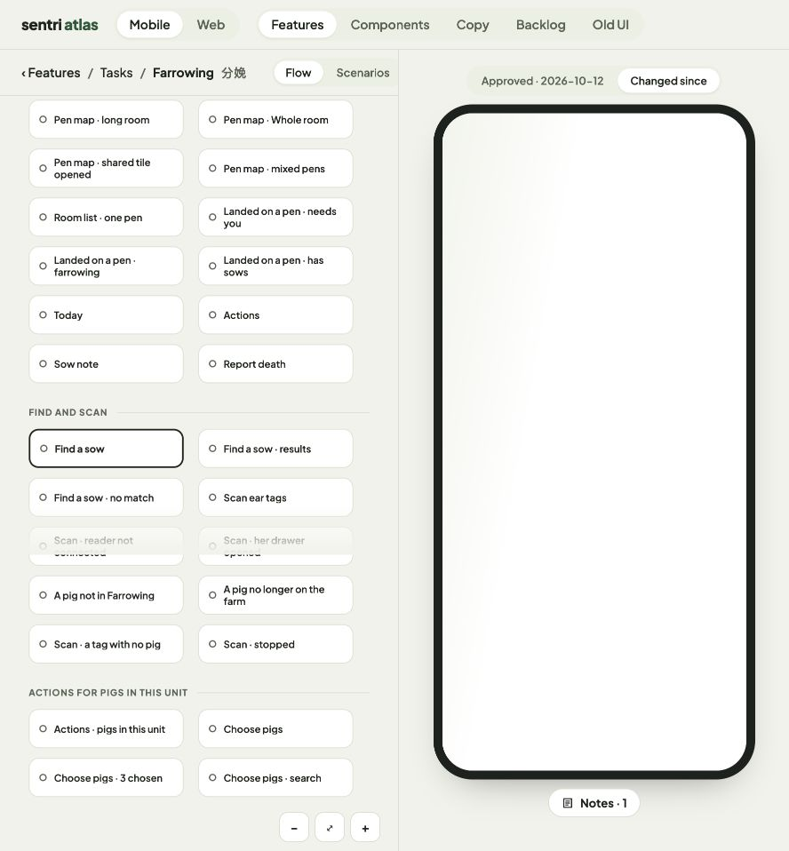
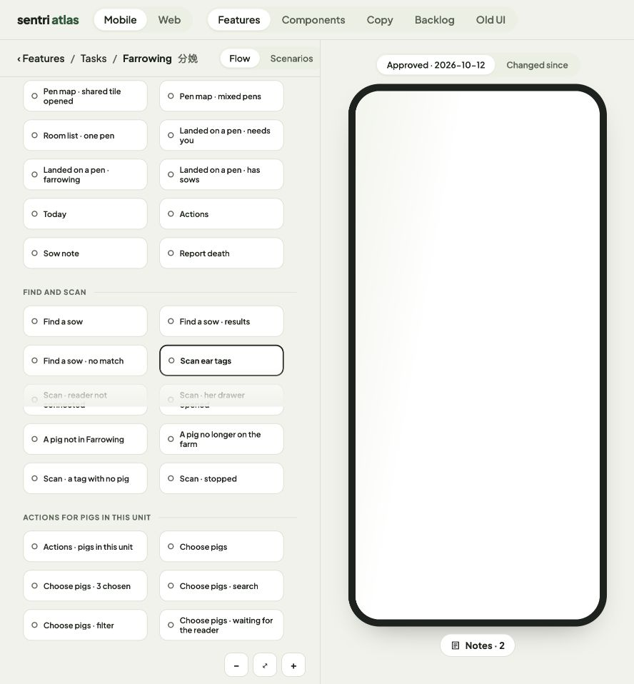
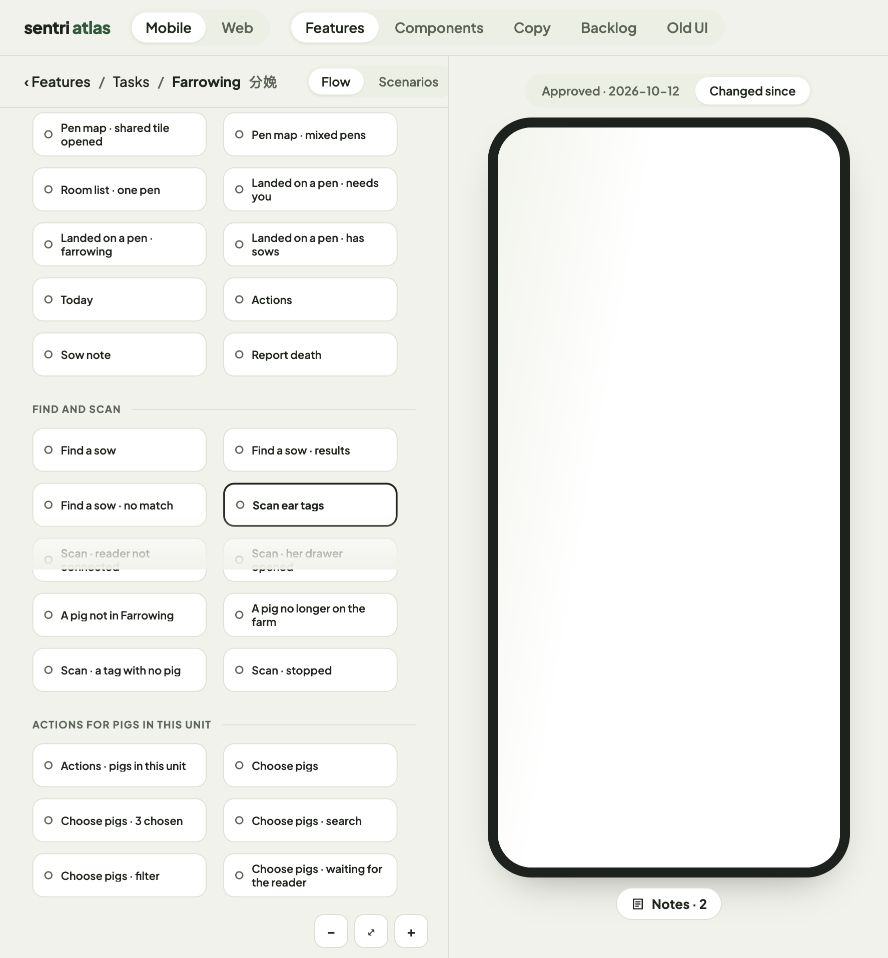
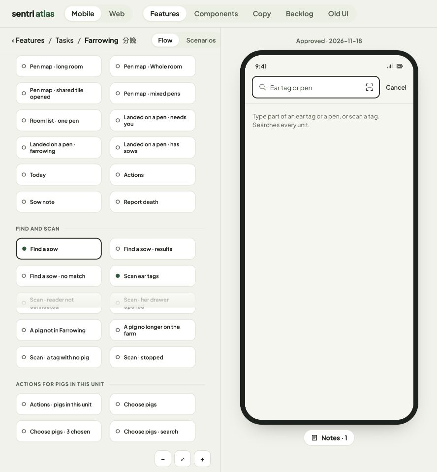
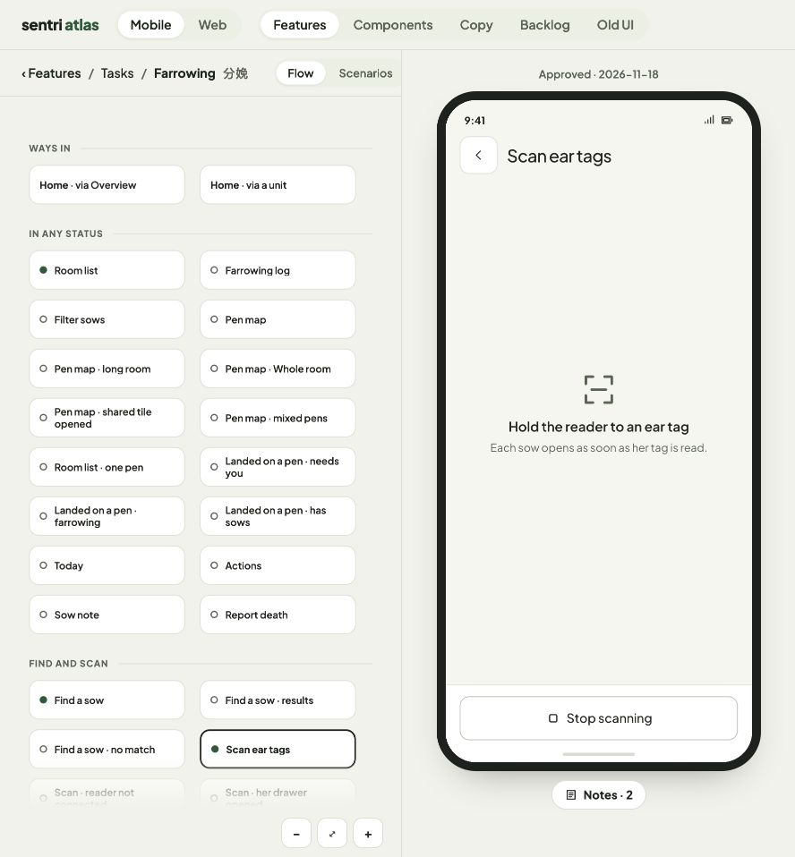

Farrowing：Actions 与 Find/Scan 逻辑确认
2026-11-18 · PR #317 · 负责人已确认以下两项规则。对照截图来自实现提交 f368b433，包含更新前的 Atlas 版本选择，说明此前不同入口显示不同版本的原因。
1. 任务入口与具体生产操作
Farrowing 内母猪 Actions 已隐藏再次打开 Farrowing 的入口；Production 区域保留流产、仔猪处理、寄养、批次管理等具体操作。其中 Care 与身份录入位于上一轮确认保留的 Piglet processing 入口。
已确认：任务内不重复提供“打开当前任务”；保留具体生产记录操作，按母猪状态提供。Care 与身份录入继续保留在“母猪记录 → Actions → Piglet processing”。现有 Actions 已符合此规则。
2. Find a sow：历史默认与当前全屏
old · 默认 Approved · 2026-10-12：底部 sheet，限定 Unit 7，未输入时列出母猪。
now · Changed since：当前全屏 Find；搜索所有单元，空输入不列结果。
3. Scan ear tags：历史默认与当前全屏

old · 默认 Approved · 2026-10-12：旧 Scanner preview、Try sample tag 与母猪列表。
now · Changed since：当前全屏 Scan；读到一个耳标便打开对应记录，没有扫描结果列表。已确认并同步负责人已确认采用右侧现有全屏版。farrowing.search 和 farrowing.scan 的批准记录已更新到 f368b433，Atlas 已重新生成。上方截图保留更新前的版本控件作为问题证据；现在默认打开全屏版，无需点击 Changed since。扫码后在全屏 Scan 上方打开母猪记录，仍是正常流程。
4. 更新后的默认入口 · 已验证

已验证 · Find a sow 默认全屏；输入 43 后显示跨单元结果，从 Scan 返回保留查询。
已验证 · Scan ear tags 默认全屏；停止、未连接及扫码记录返回均维持同一页面逻辑。打开当前 Find · 打开当前 Scan · 核对依据